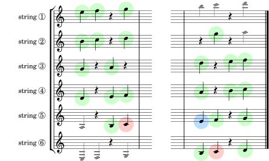

Congratulations! You've learned all the natural notes shared by postions I and VII, and that's 62% of all the natural notes on the neck below the 12th fret! There are no new notes to learn for this section, but the exercises in this group give you more practice sightreading over the whole range.
You've learned enough from this book to play any of the 400 or so exercises in Group A of the next book in this series, “Diatonic Fretboard Exercises”. That book will also extend your knowledge to cover all the natural notes on the entire fretboard. Happy sightreading!
Scale 11. All the thirds.
Scale 12. All the triads.
The boxes below automatically keep track of which exercises you've seen in this group (you get a gold star for each exercise you visit). And clicking on a box will take you to that exercise (you can see the exercise number by hovering over a box and looking at the url displayed). So all this lets you pick up where you left off in your last session, or go on to some random exercise you haven't seen yet. Courtesy of your browser history.